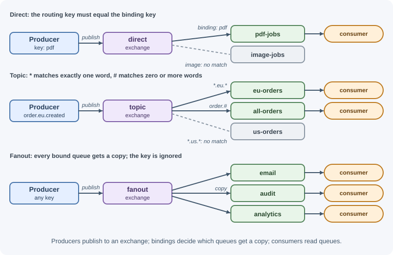
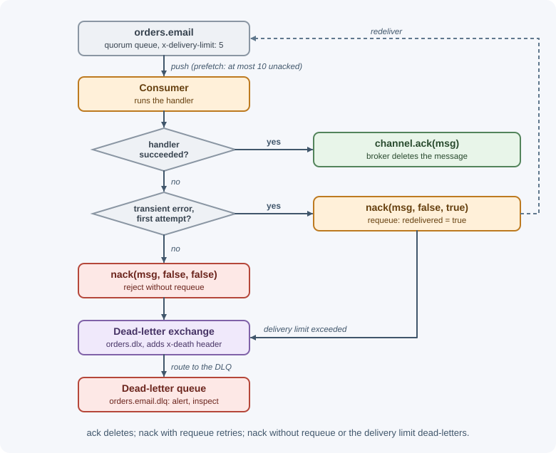

RabbitMQ¶
RabbitMQ is a widely used open-source message broker. Producers publish messages to exchanges, which route them into queues according to bindings, and consumers receive messages from those queues and acknowledge them. Its strength is flexible routing and per-message control: acknowledgements, retries, dead-lettering, TTLs, and priorities.
Why it matters¶
- It is a natural fit for task queues and commands: "resize this image", "send this email", "generate this invoice".
- Its routing model lets one published message reach exactly the queues that care about it, by exact key, by pattern, or to everyone.
- Features such as manual acks, prefetch, dead-letter exchanges, and quorum queues give you the building blocks for reliable, at-least-once processing.
- It speaks several protocols (AMQP 0-9-1, AMQP 1.0, MQTT, STOMP) and has client libraries for almost every language, including Node.js.
Real-world usage¶
- OpenStack. OpenStack's services coordinate operations and status information through a message queue. OpenStack supports several message queue services, and its installation guide uses RabbitMQ because most distributions support it (OpenStack installation guide).
- Mozilla Pulse. Mozilla runs Pulse, a managed RabbitMQ cluster, to loosely couple its automation and infrastructure tools and eliminate polling. Publishers own topic exchanges; consumers create and own queues bound to those exchanges, a direct use of the exchange-binding-queue model (Mozilla wiki).
- Celery task queues. Celery, a widely used Python task queue, uses RabbitMQ as its default broker, so many Python web applications run their background jobs on RabbitMQ without writing AMQP code directly (Celery documentation).
Popular tools and providers: self-hosted RabbitMQ (packages, Docker images, or the RabbitMQ Cluster Kubernetes Operator); managed RabbitMQ from Amazon MQ and CloudAMQP; client libraries such as amqplib (Node.js), pika (Python), and the official Java and .NET clients.
How it works¶
The AMQP 0-9-1 model¶

- A producer publishes a message to an exchange with a routing
key (a string such as
order.created). - The exchange looks at its bindings (rules connecting it to queues) and copies the message into every matching queue.
- Consumers consume from a queue. The broker pushes messages to them, limited by the prefetch count.
- Each consumer acknowledges a message when done; only then does the broker delete it.
Producers never write to queues directly. Even "send to queue X" goes through the default exchange, a nameless direct exchange to which every queue is automatically bound by its own name.
Other pieces of the model:
- Connection: a long-lived TCP connection from your app to the broker.
- Channel: a lightweight virtual connection inside a connection. Use one connection per process and separate channels for publishing and consuming.
- Virtual host (vhost): an isolated namespace of exchanges, queues, and permissions inside one broker, like a database within a database server.
Exchange types¶
| Type | Routing rule | Example binding | Typical use |
|---|---|---|---|
direct |
Routing key must equal the binding key | Queue pdf-jobs bound with key pdf |
Route tasks by type |
topic |
Routing key matches a pattern of dot-separated words: * = exactly one word, # = zero or more words |
order.* matches order.created, not order.item.added; order.# matches both |
Route events by category |
fanout |
Ignores the key; every bound queue gets a copy | Queues email, analytics, audit all bound |
Broadcast events |
headers |
Matches message header values instead of the key; x-match: all or any |
{ "x-match": "all", "format": "pdf", "region": "eu" } |
Routing on several attributes |
Topic examples with binding *.eu.#:
| Routing key | Matches? |
|---|---|
order.eu.created |
Yes |
payment.eu |
Yes (# can match zero words) |
order.us.created |
No |
eu.order |
No (* must match exactly one word before eu) |
If no binding matches, the message is dropped unless the producer set the
mandatory flag (the broker then returns it) or the exchange has an
alternate exchange configured to catch unroutable messages.
Queues and their properties¶
| Property | Meaning |
|---|---|
durable |
The queue definition survives a broker restart. (Messages also need to be persistent to survive.) |
exclusive |
Used by only one connection and deleted when that connection closes. Good for temporary reply queues |
autoDelete |
Deleted when its last consumer unsubscribes |
Arguments (x-...) |
Extra behavior: x-queue-type, x-dead-letter-exchange, x-message-ttl, x-max-length, x-overflow, and others |
Queue types:
- Classic queues: the original single-node queue type. Fine for temporary and non-critical queues.
- Quorum queues: replicated across several nodes using the Raft consensus algorithm. They keep working if a minority of nodes fail and are the recommended choice for durable, important data. They also support a delivery limit that dead-letters poison messages. (Older "mirrored classic queues" were removed in RabbitMQ 4.0; quorum queues replace them.)
- Streams: an append-only, replicated log inside RabbitMQ. Consumers read from an offset without removing messages, so many consumers can read and replay the same data, similar to Kafka.
Persistent messages¶
A message survives a broker restart only if both the queue is durable
and the message is published as persistent (deliveryMode: 2, or
persistent: true in amqplib). Quorum queues and streams always store
messages durably. Persistence costs some throughput; use it for anything you
cannot afford to lose.
Publisher confirms¶
Publishing is asynchronous: without confirmation, the producer does not know whether the broker actually stored the message. With a confirm channel, the broker sends an ack for each message once it has taken responsibility for it (written to disk, replicated to a quorum for quorum queues), or a nack if it could not.
- Wait for confirms before telling the user "done", or before deleting the row from an outbox table.
- If a confirm never arrives (connection lost), republish. That can create a duplicate, so consumers must be idempotent.
Consumer acknowledgements¶

| Action | Effect |
|---|---|
ack |
Done; the broker deletes the message |
nack with requeue: true |
Failed; put it back in the queue for another attempt (risk of a tight retry loop) |
nack / reject with requeue: false |
Failed; dead-letter it if the queue has a DLX, otherwise discard it |
| No ack, consumer disconnects | All its unacked messages are requeued and marked redelivered |
noAck: true (automatic mode) |
The broker considers messages done on delivery: at-most-once |
Prefetch (QoS)¶
The prefetch count limits how many unacknowledged messages the broker pushes to a consumer at once.
- Without a limit, the broker pushes as fast as possible: one consumer can hoard thousands of messages in memory while others sit idle, and a crash requeues all of them.
prefetch(1)gives fair dispatch (a worker gets the next message only after acking the current one) at the cost of throughput.- Values such as 10 to 100 are common for fast handlers; lower values for slow, heavy tasks. Measure.
With several consumers on one queue, RabbitMQ distributes messages round-robin among consumers that have spare prefetch capacity: the competing consumers pattern.
Dead-letter exchanges (DLX)¶
A queue can name a dead-letter exchange (x-dead-letter-exchange) and
optionally a routing key (x-dead-letter-routing-key). A message is
dead-lettered when:
- it is rejected or nacked with
requeue: false; - its TTL expires;
- the queue's length limit is exceeded (with the default overflow behavior);
- it exceeds a quorum queue's delivery limit.
RabbitMQ adds an x-death header recording the reason, the original queue,
and a count, so you can see why and how often a message died.
Time-to-live (TTL)¶
- Per-queue message TTL (
x-message-ttl, in milliseconds): messages older than this expire. - Per-message TTL (the
expirationproperty): set on a single message. - Queue TTL (
x-expires): delete an unused queue after a period.
Expired messages are dead-lettered if a DLX is set. Combining TTL and DLX gives a classic delayed retry pattern:
work queue --nack(requeue=false)--> DLX --> retry queue (x-message-ttl=30000,
x-dead-letter-exchange=work)
| after 30 s the message expires
work queue <--------------------------------------+ and is dead-lettered back
A community plugin (the delayed message exchange) offers per-message delays as an alternative.
Other features worth knowing¶
- Priorities: classic queues can be declared with
x-max-priorityso higher-priority messages are delivered first. Since RabbitMQ 4.3, quorum queues always support strict priorities (levels 0 to 31) with no argument needed;x-max-priorityapplies only to classic queues. - Length limits:
x-max-length/x-max-length-byteswith an overflow policy (drop-head,reject-publish, orreject-publish-dlx) protect the broker from unbounded backlogs. - Management UI and HTTP API: a web dashboard (port 15672 when the management plugin is enabled) shows queues, rates, consumers, and lets you inspect and move messages.
- Clustering: several nodes share metadata; quorum queues and streams replicate data across them.
When to use and when not to use¶
Use RabbitMQ when:
- You need task queues with per-message acknowledgement, retries, dead-lettering, TTLs, delays, or priorities.
- Messages must be routed to different consumers by type or pattern (direct, topic, headers exchanges).
- You need request-reply or RPC-style messaging between services.
- Clients speak different protocols (AMQP, MQTT for devices, STOMP).
- Throughput is high but not extreme, and messages are consumed soon after they are published.
Avoid it (or reconsider) when:
- You need long retention and replay for many independent readers; Kafka (or RabbitMQ streams) fits better.
- You need very high-throughput event streaming with strict per-key ordering across many consumer groups.
- Backlogs are expected to grow to millions of messages for long periods.
- You want zero operations; a managed queue such as SQS removes the broker entirely.
| RabbitMQ | Apache Kafka | Amazon SQS | |
|---|---|---|---|
| Model | Smart broker: exchanges route to queues | Distributed log with partitions | Managed queue |
| Best at | Routing, per-message control, task queues | Throughput, retention, replay, many consumers | Simple, elastic, zero-ops queues on AWS |
| Replay | Streams only | Yes | No |
| Per-message retry, TTL, priority | Yes | Built by the application | Retry via visibility timeout and DLQ; no priority |
| Ordering | Per queue (single consumer) | Per partition | FIFO queues, per message group |
| Operations | You run a cluster (or buy managed) | You run a cluster (or buy managed) | None |
Practical examples¶
Run RabbitMQ locally¶
docker run -d --name rabbitmq -p 5672:5672 -p 15672:15672 rabbitmq:management
# AMQP on localhost:5672, dashboard on http://localhost:15672 (guest/guest, local only)
Topology: topic exchange, quorum queue, dead-letter queue¶
// topology.js
export async function setupTopology(channel) {
// Main exchange for order events
await channel.assertExchange("orders", "topic", { durable: true });
// Dead-letter exchange and queue
await channel.assertExchange("orders.dlx", "fanout", { durable: true });
await channel.assertQueue("orders.email.dlq", { durable: true, arguments: { "x-queue-type": "quorum" } });
await channel.bindQueue("orders.email.dlq", "orders.dlx", "");
// Work queue for the email service
await channel.assertQueue("orders.email", {
durable: true,
arguments: {
"x-queue-type": "quorum",
"x-dead-letter-exchange": "orders.dlx",
"x-delivery-limit": 5, // quorum queues: dead-letter after repeated failed deliveries
},
});
await channel.bindQueue("orders.email", "orders", "order.created");
}
Publisher with confirms (amqplib)¶
// publisher.js
import amqp from "amqplib";
import { randomUUID } from "node:crypto";
import { setupTopology } from "./topology.js";
const connection = await amqp.connect(process.env.AMQP_URL ?? "amqp://localhost");
const channel = await connection.createConfirmChannel();
await setupTopology(channel);
export async function publishOrderCreated(order) {
const body = Buffer.from(JSON.stringify({ orderId: order.id, total: order.total }));
channel.publish("orders", "order.created", body, {
persistent: true, // survive broker restarts
contentType: "application/json",
messageId: randomUUID(),
type: "OrderCreated",
timestamp: Math.floor(Date.now() / 1000),
});
await channel.waitForConfirms(); // throws if the broker nacked
}
waitForConfirms() waits for every outstanding publish on the channel. For
high throughput, publish in batches and wait once per batch.
Consumer with prefetch, manual ack, and dead-lettering¶
// email-worker.js
import amqp from "amqplib";
import { setupTopology } from "./topology.js";
const connection = await amqp.connect(process.env.AMQP_URL ?? "amqp://localhost");
const channel = await connection.createChannel();
await setupTopology(channel);
await channel.prefetch(10); // at most 10 unacked messages for this consumer
const { consumerTag } = await channel.consume("orders.email", async (msg) => {
if (msg === null) return; // the broker cancelled this consumer
try {
const event = JSON.parse(msg.content.toString("utf8"));
await sendOrderEmail(event.orderId); // must be idempotent
channel.ack(msg);
} catch (err) {
console.error("email failed", { messageId: msg.properties.messageId, err });
// Requeue once for a transient failure; otherwise dead-letter it
const requeue = !msg.fields.redelivered;
channel.nack(msg, false, requeue);
}
}, { noAck: false });
// Graceful shutdown: stop taking new messages, then close
process.on("SIGTERM", async () => {
await channel.cancel(consumerTag); // no new deliveries
// A real worker would wait here for in-flight handlers to finish
await channel.close(); // anything still unacked is requeued
await connection.close();
});
async function sendOrderEmail(orderId) {
console.log("sending email for", orderId);
}
On a quorum queue, x-delivery-limit (20 by default since RabbitMQ 4.0)
counts failed deliveries. Since RabbitMQ 4.3, only genuine failures count:
a consumer or channel crash, or basic.reject (amqplib's
channel.reject(msg, true)). A basic.nack with requeue (channel.nack)
no longer counts, so a handler that nacks and requeues forever is never
dead-lettered by the limit. That is why this worker requeues only once and
then nacks without requeue.
Best practices¶
- Use quorum queues for important, durable work; classic queues for temporary data.
- Declare topology idempotently at startup (
assertExchange,assertQueue) or manage it as code. - Publish persistent messages with publisher confirms.
- Ack manually after processing; never use auto-ack for business work.
- Set a prefetch count; never leave it unlimited.
- Configure a DLX on every work queue and alert when the DLQ grows.
- Avoid tight requeue loops: cap attempts in the handler and use delayed
retry queues; do not rely on the delivery limit to catch
nackrequeues. - One connection per process, separate channels for publishing and consuming; reconnect with backoff when the connection drops.
- Bound queue length and monitor queue depth, consumer count, and unacked messages.
In production¶
- Publishers hang. Detect: publish calls stall; clients receive
connection.blocked; the management UI orrabbitmq-diagnosticsshows a memory or disk alarm. Cause: a backlog has filled the node's memory or pushed free disk below its limit, so the broker blocks publishers to protect itself. Fix: restore or scale consumers, set queue length limits with an overflow policy, add disk, and alert on queue depth well before the alarm thresholds. - One consumer holds thousands of unacked messages. Detect: the queue shows a large "unacked" count on one consumer while other consumers sit idle. Cause: no prefetch limit, or a very large one, with a slow handler. Fix: set a prefetch count that matches processing speed.
- Broker CPU high with little traffic. Detect: management metrics show very high connection and channel creation and closure rates. Cause: the application opens a connection (or channel) per message or per HTTP request. Fix: use one long-lived connection per process and reuse channels.
- Queue empty after a broker restart. Detect: messages that were waiting before a restart are gone. Cause: a non-durable classic queue or non-persistent messages. Fix: use quorum queues (always durable) or durable queues with persistent messages, plus publisher confirms.
- Redelivery storm. Detect: the redelivered rate is far above the
publish rate; logs (or the quorum queue's
x-acquired-countheader) show the same message failing over and over. Cause: handlersnackwith requeue on permanent errors. Fix: cap attempts in the handler and dead-letter permanent failures (since RabbitMQ 4.3,nackrequeues do not count towardsx-delivery-limit), and use delayed retry queues for transient ones.
Important terminology¶
- Exchange: the component that receives published messages and routes them to queues.
- Binding: a rule linking an exchange to a queue, often with a binding key.
- Routing key: the string a producer attaches to a message for routing.
- Default exchange: a nameless direct exchange routing by queue name.
- Channel: a lightweight virtual connection inside a TCP connection.
- Virtual host: an isolated namespace inside a broker.
- Durable queue / persistent message: survives a broker restart.
- Publisher confirm: the broker's acknowledgement to a producer.
- Prefetch (QoS): the limit on unacknowledged messages per consumer.
- Dead-letter exchange (DLX): where rejected, expired, or over-limit messages are sent.
- Quorum queue: a replicated, Raft-based queue type for data safety.
- Stream: a replayable, append-only log queue type.
Common mistakes and misconceptions¶
- Durable queue but non-persistent messages (or the reverse), then losing messages on restart.
- Publishing without confirms and assuming every message arrived.
- Auto-ack for important work, losing messages whenever a worker crashes.
- No prefetch limit, so one consumer hoards the queue and memory usage spikes.
nackwith requeue on every error, creating an infinite hot loop on poison messages.- Opening a new connection per message; connections are expensive.
- Expecting strict ordering with many consumers.
- Using RabbitMQ as long-term storage; huge backlogs hurt performance. Streams or Kafka fit replay and retention needs better.
Revision questions¶
- Trace a message from producer to consumer through an exchange, binding, and queue.
- Compare direct, topic, fanout, and headers exchanges. Which binding
matches
order.eu.created:order.*,order.#, or*.eu.*? - What two settings must both be in place for a message to survive a broker restart?
- What does the prefetch count control, and what goes wrong without it?
- List the reasons a message can be dead-lettered.
- Why are quorum queues preferred over classic queues for important data?
Further learning¶
- RabbitMQ: Tutorials, including JavaScript versions using amqplib.
- RabbitMQ: AMQP 0-9-1 Model Explained.
- RabbitMQ: Consumer Acknowledgements and Publisher Confirms.
- RabbitMQ: Quorum Queues, Dead Letter Exchanges, and Streams.
- Related: delivery guarantees and messaging patterns.